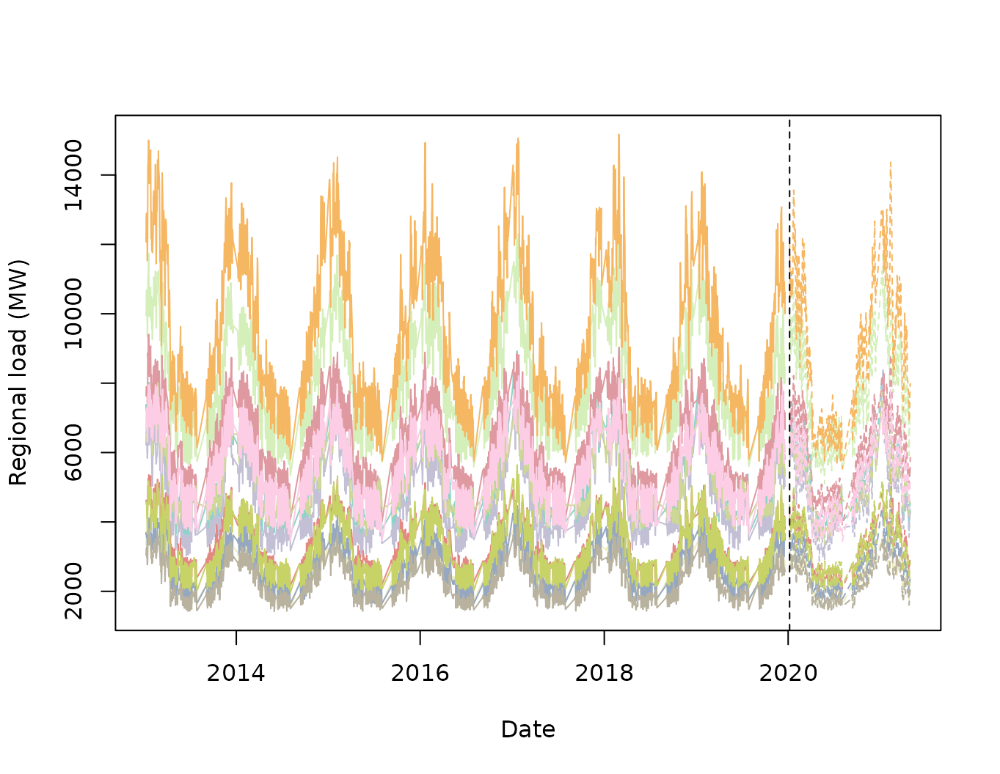
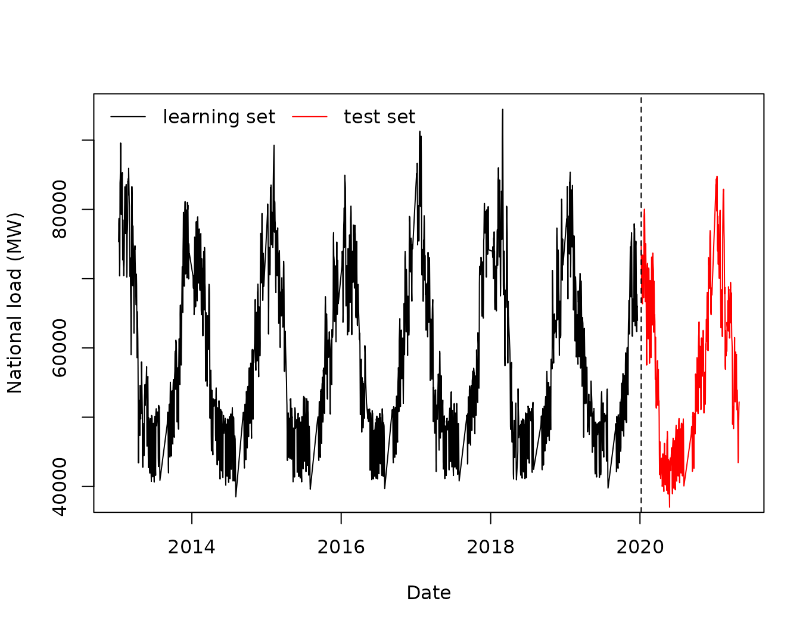
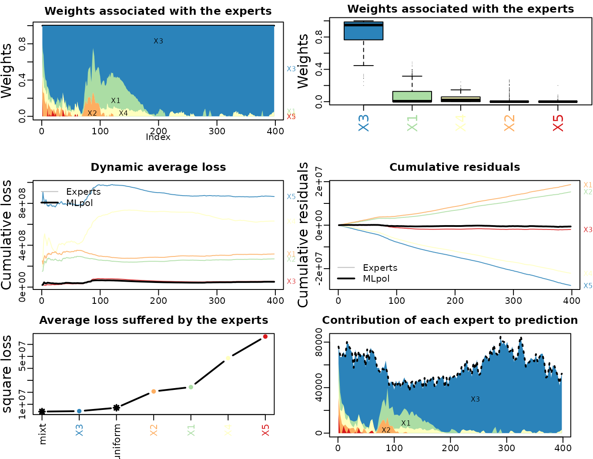

vignettes/regional_forecasting.Rmd
regional_forecasting.RmdThe data are from RTE open data and Météo-France. The problems adress in this notebook are related to forecasting when breaks occur in the the data generative process and how to deal with it with statistical machine learning tools like GAMs, RF and online aggregation of experts in a hierarchical context. The target \(y_t\), the electricity load at time \(t\), is observed sequentially each day, the experts and the aggregation are thus updates at the same frequency.
The dataset contains electricity consumption (in MW) at the French national level (“Load”) and for the 12 metropolitan administrative regions (it does not include Corsica):
Our goal is to forecast the French national consumption, exploiting the regional loads. For all the load consumption data we compute the lags one day and one week and denote it with the subscripts “.48” and “.336”.”
rm(list=objects())
library(magrittr)
library(opera)
regional_load <- readRDS(system.file("extdata", "regional_load.RDS", package = "opera", mustWork = TRUE))
n0 <- c(1:2011)
Data0 <- regional_load[n0,]
Data1 <- regional_load[-n0,]
name_reg <- c("Nouvelle_A", "Auvergne_R", "Bourgogne", "Occitanie",
"Hauts_de_F", "Normandie", "Bretagne",
"Centre_Val", "Ile_de_Fra", "Pays_de_la_Loire",
"Provence_A", "Grand_Est")
nb.cols <- length(name_reg)
col <- colorRampPalette( RColorBrewer::brewer.pal(8, "Set3"))(nb.cols)
plot(Data0$Date, Data0[,name_reg[1]], type = 'l', xlim = range(Data0$Date, Data1$Date),
ylab = 'Regional load (MW)', xlab = "Date", col = col[1], ylim = range(Data0[,name_reg]))
lines(Data1$Date, Data1[,name_reg[1]], col = col[1], lty = 'dashed')
for(i in c(2:length(name_reg))){
lines(Data0$Date, Data0[,name_reg[i]], col = col[i])
lines(Data1$Date, Data1[,name_reg[i]], col = col[i], type = 'l', lty = 'dashed')
}
abline(v = Data1$Date[1], lty = "dashed")
Meteo Data have been aggregated by region, we
computed weighted means of meteo stations data with weights proportional
to \(\exp(-h d^2)\) where \(d\) is the euclidian distance between the
position of the station and the centroid of each regions, temperature
data are denoted T_ followed by the name of the region. We
compute the exponential smoothing of these temperatures with
coefficients \(\alpha=0.95\) and \(0.99\). E.g. for \(\alpha=0.95\) at a given instant \(i\), \(\text{T_s95}=\alpha \text{T_s95}_{i-1} +
(1-\alpha) \text{Temp}_i\), these covariates are denoted with the
subscript _s95 or _s99. Finally we compute the
minimal and maximal value of these smooth temperatures for each days and
denote it with the subscript _min and
_max.
Calendar Data are also included: Date, day of the week (“WeekDays”), daylight savings (“DLS”) an indicator of winter/summer hour, an indicator for summer holidays(“Summer_break”), an indicator for winter holidays(“Christmas_break”), the time of year (“toy”) whose value grows linearly from 0 on the 1 of January 00h00 to 1 on the 31 of December 23h30.
We split the data in 2, the learning set (when we learn the experts) contains the data from January 2013 to december 2019. The test set (when we forecast online) contains the data from January 2020 to april 2021.
plot(Data0$Date, Data0$Load, type = 'l',
xlim = range(Data0$Date, Data1$Date),
ylab = 'National load (MW)', xlab = "Date",)
lines(Data1$Date, Data1$Load, col = 'red', type = 'l')
legend("topleft", c("learning set", "test set"), col = c("black", "red"),
lty = 1, bty = 'n', ncol = 2)
abline(v = Data1$Date[1], lty = "dashed")
Here we present the different models we use as experts in the aggregation. Our experts are obtained by stacked gam/forest regression. GAM are a powerfull forecasting tool classicaly. It provides interpretable models and a natural way to incorporate expert knowledge into a statistical model but can miss some interaction between the inputs. Moreover, due to smoothness assumptions imposed to GAM functionals, GAM can extrapolate out of training data. On the other hand, RF are by definition restricted to the convex envelop of the training data but their black box design can capture well complex non-linear interactions. To take the best of both worlds, we propose to stack these two approaches. We proceed in two steps, first we fit a GAM (see bellow), then we plug the non-linear transformation of the data estimated by GAM as supplementary data of a random forest fitted of the (CV or block CV) residuals of the GAM.
For conciseness, we present here the model at the national level but we computed the regional model exactly the same with regional target and covariates.
The first model is a gaussian GAM fitted with mgcv package according to the following equation (here for the national load, for regional just change the target and covariates in accordance).
eq <- Load ~ s(as.numeric(Date), k=3) + WeekDays:DLS + s(toy, k = 20, bs = 'cc') +
s(as.numeric(Date),T_national, k=4) + s(T_national_s95, k=5) + s(T_national_s99, k=5) +
s(T_national_s99_min, T_national_s99_max) + Load.48:WeekDays + Load.336
g <- mgcv::gam(eq , data = Data0, family = "gaussian")
gam_nat.forecast <- predict(g, newdata = Data1)We proceed in two steps:
The parameter of the RF are the default parameters (\(500\) trees, \(mtry=\sqrt{p}\), unlimited tree depth) where \(p\) is now the number of covariates plus the number of GAM features.
### extract the GAM terms
terms0 <- predict(g, newdata = Data0, type = 'terms')
terms1 <- predict(g, newdata = Data1, type = 'terms')
colnames(terms0) <- paste0("gterms_", c(1:ncol(terms0)))
colnames(terms1) <- paste0("gterms_", c(1:ncol(terms1)))
### include it in the stacked RF
#### first build a data frame
data0_rf <- data.frame(Data0, terms0)
data0_rf$res <- g$residuals # fitted residuals of the GAM
data0_rf$res.48 <- c(data0_rf$res[1], data0_rf$res[1:(length(data0_rf$res)-1)]) # lags of the fitted residuals
data0_rf$res.336 <- c(data0_rf$res[1:7], data0_rf$res[1:(length(data0_rf$res)-7)])
data1_rf <- data.frame(Data1, terms1)
data1_rf$g.forecast <- predict(g, newdata=Data1)
residuals <- data1_rf$Load - data1_rf$g.forecast #forecast residuals
data1_rf$res.48 <- c(residuals[1], residuals[1:(length(residuals)-1)]) #lags of the forecast residuals
data1_rf$res.336 <- c(residuals[1:7], residuals[1:(length(residuals)-7)])
### equation of the RF
cov <- c(paste0('Load', c(".48", ".336")),
paste0('T_', "national"),
paste0('T_', "national", '_s99'),
paste0('T_', "national", '_s95'),
paste0('T_', "national", '_s95_min'),
paste0('T_', "national", '_s95_max'),
'toy', 'BH', 'tod', 'DLS', 'Summer_break', 'Christmas_break', 'res.48', 'res.336')
gterm <- paste0("gterms_", c(1:ncol(terms0)))
cov <- paste0(c(cov, gterm), collapse = '+')
formule_rf <- paste0("res", "~", cov)
gamrf_nat <- ranger::ranger(formule_rf, data = data0_rf, quantreg = T)These stacked forest can easily provide quantile estimates. This is particularly useful to design experts for low and high quantiles which can then be aggregated online to track the changes in the distribution of the load. For each region and at the national level we consider 5 experts associated to quantiles 0.05, 0.1,0.5,0.9 and 0.95. This choice of individual is particulary well suited for online convex aggregation (there is a high probability that the real consumption fall in the convex hull of the quantiles experts). Here is the example on stacked forest implementation for national data:
qu <- c(0.05, 0.1,0.5,0.9, 0.95)
gamrf_nat.forecast <- predict(gamrf_nat, data = data1_rf, quantiles = qu, type='quantiles')$predictions +
as.vector(gam_nat.forecast)To provide relevant experts at the national level from regional ones we rescale each expert this way:
\(\widehat{y}_{regional} := \widehat{y}_{regional} * \frac{\sum_{t=1}^{T_0} y_t^{national}}{\sum_{t=1}^{T_0} y_t^{regional}}\)
Here we describe the different aggregation approaches that can be performed in this framework:
Full desagregated: using the full set of scaled experts as experts (65 experts, 5 by regions + 5 at the national level) and the national demand as our target variable.
Hierarchical aggregation: in each region we aggregate the 5 experts using the regional demand as a target, we obtained 12 experts + the quantile 0.5 expert of the national level that are aggregated with the national demand as our target variable.
Vectorial aggregation: we illustrate the possibility to share weights between the region and at the national level. here the experts are the 5 quantiles stacked RF in each regions and the (vectorial) target is the vector of loads in each regions and at the national level. The implicit model behind that kind of aggregation is that when an expert receive a low weigths in a region, it has to receive a low weight in all region simultaneously.
experts <- readRDS(system.file("extdata", "regional_experts.RDS", package = "opera", mustWork = TRUE))
experts_raw <- readRDS(system.file("extdata", "regional_experts_raw.RDS", package = "opera", mustWork = TRUE))
dim(experts)
#> [1] 398 65
agg <- opera::mixture(Y = as.numeric(Data1$Load), experts=experts)
## Run if you want to see dynamic ploy
# plot(agg)
mape <- function(y, ychap, digits = 3){
return(signif(100*mean(abs(y-ychap)/abs(y),na.rm=TRUE),digits=digits))
}
## RTE national forecast, dayahead
mape(y = Data1$Load, ychap = Data1$Forecast_RTE_dayahead)
#> [1] 1.58
## National forecast
mape(y = Data1$Load, ychap = experts[, "nat0.5"])
#> [1] 2.04
## Aggregation
mape(y = Data1$Load, ychap = agg$prediction)
#> [1] 1.38
## sum of regional forecast
mape(y = Data1$Load, ychap = rowSums(experts_raw[, grep("0.5", colnames(experts_raw))]))
#> [1] 1.81
## Pre_covid
pre_covid <- which(Data1$Date >= as.POSIXct(strptime("2019-09-01 00:00:00", "%Y-%m-%d %H:%M:%S"), tz="UTC") &
Data1$Date < as.POSIXct(strptime("2020-03-16 00:00:00", "%Y-%m-%d %H:%M:%S"), tz="UTC"))
mape(y = Data1$Load[pre_covid], ychap = agg$prediction[pre_covid])
#> [1] 1.33
## hard lockdown
hard_lockdown <- which(Data1$Date >= as.POSIXct(strptime("2020-03-16 00:00:00", "%Y-%m-%d %H:%M:%S"), tz="UTC") &
Data1$Date < as.POSIXct(strptime("2020-04-16 00:00:00", "%Y-%m-%d %H:%M:%S"), tz="UTC"))
mape(y = Data1$Load[hard_lockdown], ychap = agg$prediction[hard_lockdown])
#> [1] 2.71
## "post" lockdown
post_lockdown <- which(Data1$Date >= as.POSIXct(strptime("2020-04-16 00:00:00", "%Y-%m-%d %H:%M:%S"), tz="UTC"))
mape(y = Data1$Load[post_lockdown], ychap = agg$prediction[post_lockdown])
#> [1] 1.28
reg_scale <- Data1[, name_reg]
m <- matrix(c(1,mean(Data0$Load)/colMeans(Data0[,name_reg])),
nrow = nrow(Data1), ncol = length(name_reg) + 1, byrow = T)
Y <- as.matrix(Data1[, c("Load", name_reg)]*m)
experts2 <- array(0, dim = c(nrow(Data1), length(name_reg) + 1, 5))
name <- c("nat", name_reg)
for(k in c(1:(length(name_reg)+1))){
experts2[,k,] <- experts[, grep(name[k], colnames(experts))]
}
agg_vector<- opera::mixture(Y = Y, experts = experts2)
plot(agg_vector, dynamic = FALSE)
# plot(agg_vector)
mape(y = Data1$Load, ychap = agg_vector$prediction[,1])
#> [1] 1.87
mape(y = Data1$Load[pre_covid], ychap = agg_vector$prediction[pre_covid,1])
#> [1] 1.04
mape(y = Data1$Load[hard_lockdown], ychap = agg_vector$prediction[hard_lockdown,1])
#> [1] 5.56
mape(y = Data1$Load[post_lockdown], ychap = agg_vector$prediction[post_lockdown,1])
#> [1] 1.73The performances are significantly better with vectorial weights before 2020, when the lockdown due to the COVID 19 affected the consumption. During the lockdown the performances are bad, meaning that the impact of the lockdown was not simular during the different regions. That can be partly explained as the impact of the pandemy on consumption really depends on social, demographyc and economic profile of the region. Furthermore, the dynamic of the pandemy was bot simultaneous between the regions.
Foresting at different horizon is an important need in time series analysis. By default the mixture function learn the weights and produce the aggregation forecasts in an online fashion, supposing horizon 1 for both the expert and the aggregation.
Suppose we want to produce each day a forecast at horizon \(h=10\), a possible way to do it is:
X <- experts
Y <- Data1$Load
agg <- opera::mixture(Y=as.numeric(Data1$Load), experts=experts)
change_horizon <- function(h, agg){
## the h first weights stay equal to inital values of the weights
rep(agg$weights[1,], h) %>% matrix(ncol = ncol(agg$weights)) %>% dim
w <- rbind(rep(agg$weights[1,], h) %>%
matrix(ncol = ncol(agg$weights)), agg$weights[1:(nrow(agg$weights)-h),])
agg_horizon <- agg
agg_horizon$weights <- w
agg_horizon$prediction <- rowSums(w*agg$experts)
return(agg_horizon)
}
map_horizon <- mape(y = Y, ychap = agg$prediction)
for(h in c(1:14)){
agg_horizon <- change_horizon(h = h, agg)
map_horizon <- c(map_horizon, mape(y = Y, ychap = agg_horizon$prediction))
}
plot(map_horizon, type='l')